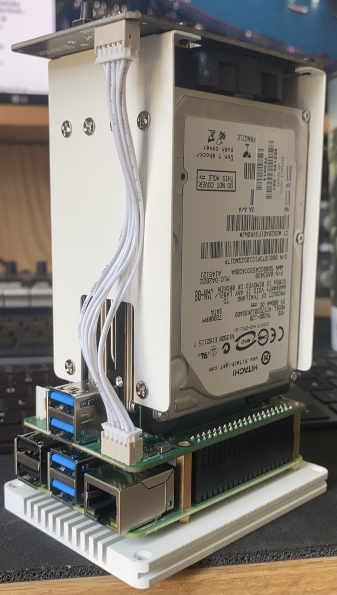

Raspberry Time Machine [Guide]
Updated: 08/06/2020
Intro:
Over the years through repairing and upgrading devices, I have accumulated a good amount of perfectly fine and functional internal HDDs. I didn't want to just throw them out, so i figured there had to be another solution. I decided I wanted to build a NAS for my home network. There are a ton of options out there for home NAS systems, like Synology and QNAP, but I really didn't want to spend an arm and a leg just to use these drives that I would otherwise throw out. I searched around, and found this:
This is the Rock Pi SATA Hat, a add-on module and case for the Raspberry Pi 4. This is exaclty what i was looking for; a low cost alternative to the bugger brands I could build myself and put those old drive to use. You can check it out here. I chose to use mine for a few different purposes, including a Time Macine backup solution as well as a network RAID array for my retro game collection.
What you'll need:
There are only a few things you'll need to get this project started:
- Rock Pi Sata Hat (Listed above)
- 32GB SD Card
- Raspberry Pi 4 (I chose the 4GB model)
- A real PC (I used a Mac)
- 1-4 2.5" HDDs (sizes don't matter unless you plan a certain RAID configuration)
The Rock Pi kit comes with everything you'll need to assemble the tower. It is important to note that the assembly does come with a shroud and fan, which it not pictured above, and is NOT required.
Installing Linux
This part is easy. I chose to use the version of Linux optimized for the Pi, which you can find on raspberrypi.org. Using Raspberri Pi Imager, simply insert your SD into your computer, select your verison of Liunx, and let it go. Once it's done, insert that SD card into your Pi. NOTE: You dont have to use Raspian OS, thats just what i chose to use. Once you have your Pi set up, issue the following commands (through the device itself or SSH) to make sure everything is up to date:
sudo apt-get upgrade
Installing Drivers/Firmware
Issue the following command to make the Rock PI recognize your drives and operates correctly:
I would reccomend visiting the manufactures website here for additonal documentaion for adjustments like firmware, fan curve, LCD messaging... etc
Install/Configure Open Media Vault
Now to install Open Media Vault (OMV). Issue the following command:
From here, you can configure OMV to fit your preferences. For me, I set up a RAID configuration with the two 1TB drives I had, and kept the other two as individual. Check the guide in resources from DannyDa. Now you an SSH into the NAS through terminal or connect the drive through the Time Machine application.
Credits and resources
There were a ton of methods I tried to get this up and running successfully. You may want to configure yours a bit differently and not use OMV. Below are some awesome resources I used to learn from: